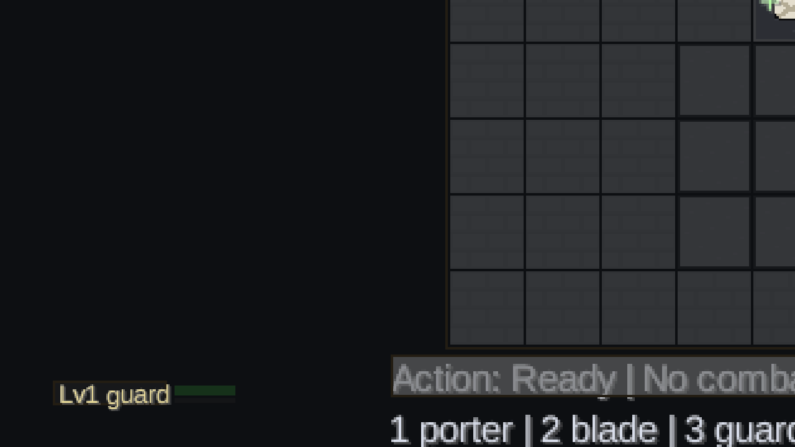
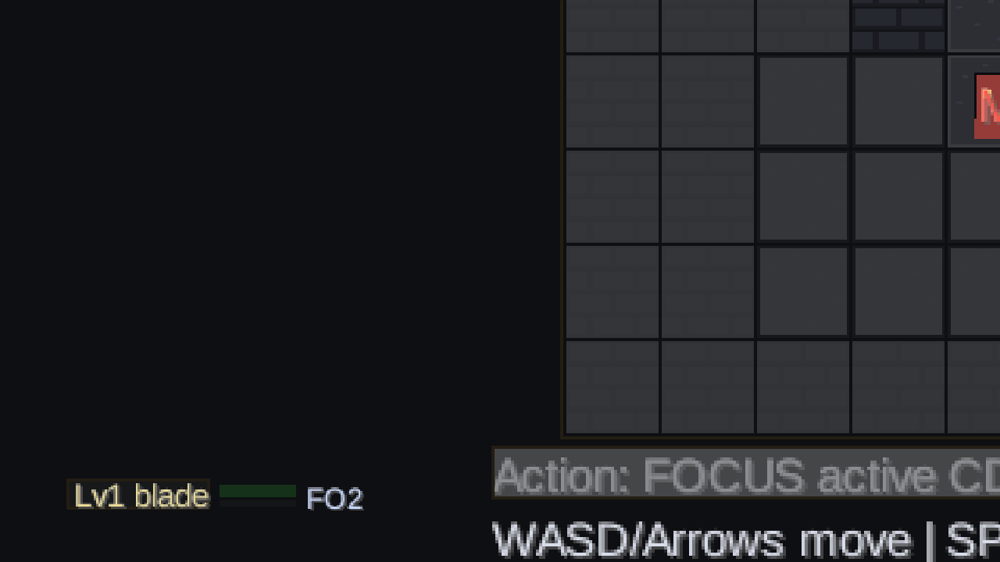

Prototype, not shipped game
현재 상태는 Java/libGDX 로그라이크의 핵심 규칙, UI 현대화 실험, 검증 파이프라인을 갖춘 in-progress prototype입니다. 출시, 상용화, Android 배포 완료로 표현하지 않습니다.
Java/libGDX 로그라이크 프로토타입을 만들며, AI 협업이 빠르게 흩어지지 않도록 테스트, 진행 로그, handoff, evidence gate를 함께 설계한 개발 사례입니다.
01 / Public Overview
이 프로젝트는 완성된 출시작이 아니라, 규칙 기반 로그라이크를 장기적으로 만들기 위한 엔지니어링 프로토타입입니다. 포트폴리오의 핵심은 “AI로 만들었다”가 아니라 “AI 협업을 검증 가능한 개발 프로세스로 묶었다”는 점입니다.
현재 상태는 Java/libGDX 로그라이크의 핵심 규칙, UI 현대화 실험, 검증 파이프라인을 갖춘 in-progress prototype입니다. 출시, 상용화, Android 배포 완료로 표현하지 않습니다.
02 / What Has Been Built
외부용 설명은 기능 나열보다 “왜 이렇게 만들었는가”가 중요합니다. 이 프로젝트는 렌더링보다 규칙 검증을 먼저 세우고, 그 위에 UI와 운영 체계를 얹는 방식으로 진행됐습니다.
이동, 전투, 회복 아이템, bone fragment pickup, run state, save/load contract를 headless tests로 검증할 수 있게 분리했습니다.
class selection, active skill/status depth, authored floor, boss gate, run clear feedback 같은 전체 플레이 흐름의 뼈대를 만들었습니다.
combat simulation harness와 route-focused tests로 balance proxy, 반복 행동, clearability를 코드 레벨에서 추적합니다.
Shattered Pixel Dungeon의 GPLv3 source route를 기준으로, 이름만 빌리는 UI가 아니라 window lifecycle, modal dispatch, measured text 같은 동작 단위로 차이를 분해했습니다.
Codex 세션이 만든 변경을 `ops/status.json`, `ops/handoff.md`, `Progress.md`, Sub-brain 기록으로 연결해 다음 세션이 같은 기준에서 이어갈 수 있게 했습니다.
reference-source study와 GPLv3-compatible framing을 명확히 분리해, 원본 자산이나 코드를 project-original로 과장하지 않도록 관리합니다.


03 / AI-Native Development Pipeline
이 프로젝트에서 AI는 “자동으로 게임을 완성하는 도구”가 아닙니다. 사람의 방향 설정 아래, 반복 작업과 검증 기록을 빠르게 축적하는 개발 파트너로 사용했습니다.
Game Dev, Portfolio, Release/Ops 같은 역할별 directive로 세션 범위와 금지사항을 먼저 고정합니다.
큰 비전을 한 번에 구현하지 않고, 테스트 가능한 단위로 gameplay, UI, tooling을 나눠 진행합니다.
Gradle tests, text smokes, route checks, CodeGraph records, artifact hashes가 claim의 근거가 됩니다.
status, handoff, progress, Sub-brain records로 다음 AI 세션이 같은 맥락에서 이어갑니다.
04 / Evidence
공개 페이지에서는 내부 로그 전체를 노출하지 않지만, 어떤 근거 위에서 말하는지는 명확해야 합니다. 아래 항목은 이 프로젝트가 단순 화면 mockup이 아니라 검증 가능한 작업이었다는 증거입니다.
./gradlew :core:test --rerun-tasks
Core model, UI harness, combat simulation, route tests를 포함한 headless validation 기록.
./gradlew :desktop:compileJava
Desktop runtime compile path 검증.
./gradlew :desktop:run -Drogueos.smokeExit=true -Drogueos.textSmoke=true
Desktop review path reachability 확인. 단, smoke는 usability acceptance가 아니라 reachability proof입니다.
OriginUiDeltaHarnessTest
R2 UI runtime spine의 window, button, modal dispatch, close lifecycle, measured text behavior 검증.
말할 수 있는 것: Java/libGDX 프로토타입, deterministic gameplay validation, AI-assisted development operations layer, source-backed UI modernization process.
아직 말하지 않는 것: 출시 완료, Android 배포, store-ready product, polished UI, 원본보다 나은 UX, GPL-covered combined distribution에 대한 proprietary closed-source ownership.
05 / Direction
이 페이지는 현재까지의 구현을 포장하는 데서 끝나지 않습니다. 다음 단계는 “플레이 가능한 척”이 아니라 실제 조작 편의성과 UI runtime depth를 올리는 쪽으로 잡혀 있습니다.
작은 창과 큰 창에서 같은 UI가 깨지지 않도록 map, HUD, text scale, scene framing을 안정화합니다.
inventory/bag surface를 정적 표시가 아니라 선택, 취소, item detail, modal dispatch가 있는 UI로 이동합니다.
movement, combat, item use, class active, inventory, warp를 30-60초 영상이나 GIF로 보여줄 수 있게 정리합니다.
Android artifact, branding, package identity, GPLv3 notice, credits, update/support links를 별도 release gate에서 다룹니다.
06 / Resume Use
회사/직무별로 문장을 조정해야 하지만, 현재 공개 가능한 포지셔닝은 아래 범위 안에 있습니다.
공개 표현 기준: 이 페이지는 구현된 prototype과 검증된 개발 프로세스를 설명합니다. 최종 출시작, Android 배포, polished UI, 상용 release readiness는 아직 claim하지 않습니다.